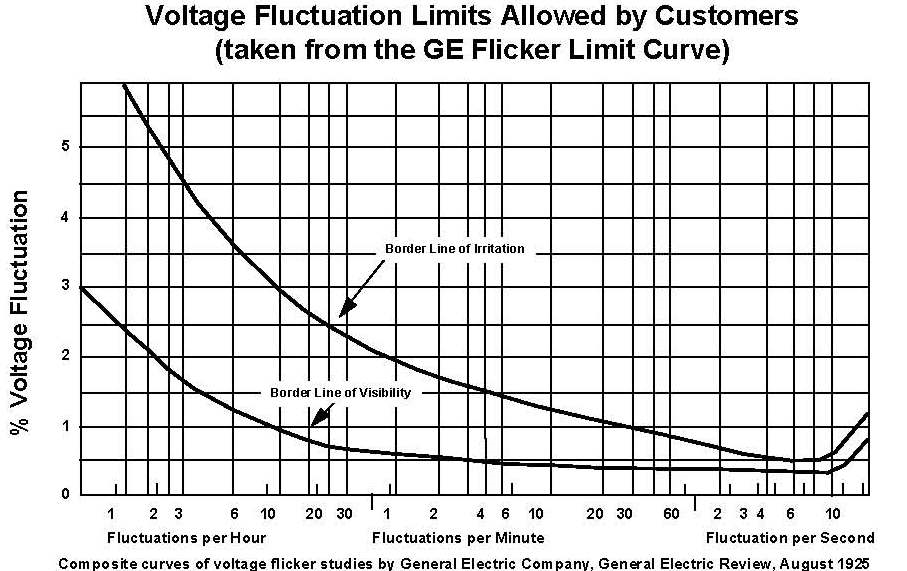

Flicker: Understanding the Causes and Solutions for Flickering Lights
Flickering lights can be a nuisance, causing annoyance and even headaches for many people. They can also be an indication of a more serious underlying issue. In this article, we will discuss the causes of flickering lights and how to solve this common problem.
Introduction
Have you ever noticed a flickering effect while using LED lights? This can be a result of temporal light modulations in dynamic lighting. While LEDs are known for their ability to create dynamic colored light, the human visual system can be sensitive to flicker caused by these light modulations.
Flickering lights are a common problem that many people experience at some point in their lives. They can be caused by a range of issues, from simple to more complex electrical problems. Flickering lights can be a sign of an underlying electrical issue and can be dangerous if left unchecked.
Research has shown that the sensitivity of the human visual system to flicker depends on the frequency of the modulation. Above a certain critical frequency known as the critical fusion frequency (CFF), the flicker stimulus fuses and is not perceived anymore, regardless of its modulation size. However, below the CFF, the perception of flicker depends on the modulation contrast of the stimulus as a function of the modulation frequency. This relationship between contrast sensitivity and frequency is described by the temporal contrast sensitivity function (TCSF).
Flicker can be caused by a temporal modulation in luminance (luminance flicker) or in color (chromatic flicker). Interestingly, the human visual system resolves luminance and chromatic flicker separately. Studies have shown that the TCSFs for luminance flicker have a bandpass characteristic, while the TCSFs of chromatic flicker generally show a low-pass characteristic, with sensitivity decreasing for higher frequencies.
Additionally, the CFF for chromatic flicker has been shown to be lower than for luminance flicker (25 Hz vs. 50 Hz). Both the CFF and the TCSF are affected by stimulus features, such as stimulus size and average luminance. For example, peak sensitivity and filter characteristics for chromatic and luminance flicker are differently affected by different mean luminance levels up to 31.83 cd/m2.
Overall, understanding the temporal contrast sensitivity function and its relationship to flicker can help us design better lighting systems that reduce the potential for visual artifacts like flicker. By taking into account factors like frequency and contrast sensitivity, we can create lighting that is more comfortable and less likely to cause visual strain.
Chromatic flicker
Understanding how we perceive colors is a complex topic. One aspect that researchers have been exploring is how our eyes detect flickering lights of different colors, known as chromatic flicker. To study this phenomenon, researchers must first isolate it from another type of flicker called luminance flicker. To achieve this, scientists use a method called heterochromatic flicker photometry (HFP), which adjusts the luminance ratio between two alternating lights until the minimum amount of luminance flicker is perceived.
Previous studies have found that measuring chromatic flicker sensitivity is a challenging task. This is partly due to the luminance of the flicker stimulus not being constant, resulting in visible luminance flicker. Research has also shown that the luminous efficiency function used in photometric measurements does not accurately capture the sensitivity of individual observers, especially for short wavelengths. This can lead to a different brightness for two colored lights with the same luminance within and between different observers.
To adjust for these issues, researchers adjust chromatic stimuli such that they have the same brightness, referred to as isoluminant stimuli. This is done using HFP, which allows researchers to study sensitivity to chromatic flicker in isolation, without any confounding effects of luminance flicker.
One recent study used HFP to investigate chromatic flicker perception while adjusting for isoluminance. The study found that human sensitivity to chromatic flicker cannot be described by one single function but depends on the chromaticity of the base color and the modulation direction. This implies that it is necessary to identify the TCSFs of a wide range of base colors. The study also demonstrated that for isoluminance, the luminance ratios between color stimuli are significantly different from one in some cases. This implies that the luminous efficiency function used in photometric measurements does not accurately capture human spectral sensitivity and needs to be corrected to ensure chromatic isoluminance. A study found that the sensitivity to differences in color over time, expressed as 1/dLMS, was a useful way to measure the relationship between chromatic modulation and frequency.
Furthermore, our ability to perceive changes in light intensity over space and time is limited. Half a century ago, researchers described these limits in three papers by measuring the visibility of variations in light intensity. They found that sensitivity depends on the light level from which the deviations occurred. They recently reanalyzed these reports and discovered a remarkable simplification. They found that at moderate to high frequencies, the log of contrast sensitivity is a linear function of spatial frequency, temporal frequency, and the log of adapting luminance. This means that log sensitivity forms a rectangular pyramid as a surface in the space defined by spatial and temporal frequency. They call this surface the "pyramid of visibility." The height of the pyramid rises linearly with the log of adapting luminance, resulting in a diamond-shaped "window of visibility" that grows and shrinks with the log of adapting luminance. This finding is significant for both theory and practice, as it constrains models of visual processing and determines the ultimate spatial and temporal resolution required in electronic displays of static or moving imagery.
What Causes Flickering Lights?
Flickering lights can be caused by a variety of factors. Some of the most common causes include:
Loose Bulbs
Loose bulbs can cause flickering lights. If a bulb is not properly screwed in, it can cause the light to flicker. This is an easy fix and can be solved by simply tightening the bulb.
Faulty Bulbs
If a bulb is faulty, it can cause flickering lights. This is because the bulb may not be able to maintain a constant current flow, causing the light to flicker. Replacing the bulb is the best solution in this case.
Voltage Fluctuations
Voltage fluctuations can also cause flickering lights. This is when the voltage supplied to the light is not constant, causing the light to flicker. This can be caused by a faulty power supply or electrical wiring issues.
Wrong selection of modulation and frequency
Above a certain critical frequency, the flicker stimulus fuses and is not perceived anymore. However, below the critical fusion frequency, the perception of flicker depends on the modulation contrast of the stimulus as a function of the modulation frequency. This relationship between contrast sensitivity and frequency is described by the temporal contrast sensitivity function. By understanding the temporal contrast sensitivity function and its relationship to flicker, we can create lighting that is more comfortable and less likely to cause visual strain. Additionally, studies have shown that the human visual system resolves luminance and chromatic flicker separately, and their TCSFs have different characteristics.
Overloaded Circuits
Overloaded circuits can cause flickering lights. When there are too many appliances connected to a single circuit, it can cause the lights to flicker. This can be solved by redistributing the load or by adding an additional circuit.
Old or Faulty Wiring
Old or faulty wiring can also cause flickering lights. If the wiring is damaged or worn out, it can cause the light to flicker. This is a serious issue and requires professional help to fix.
Solutions for Flickering Lights
Once the cause of the flickering lights has been identified, it is important to take appropriate action to solve the problem. Here are some solutions:
Tightening Bulbs
If the flickering is caused by loose bulbs, simply tightening them can solve the problem.
Replacing Faulty Bulbs
If the flickering is caused by faulty bulbs, replacing them is the best solution.
Installing Voltage Stabilizers
Installing voltage stabilizers can help regulate the voltage supplied to the lights, preventing flickering.
Choosing the right modulation and frequency
By choosing the right modulation and frequency for your lighting system, you can reduce the potential for visual artifacts like flicker. Understanding the temporal contrast sensitivity function and its relationship to flicker is key to achieving this. By taking into account factors like frequency and contrast sensitivity, you can create lighting that is comfortable and less likely to cause visual strain.
Adding Additional Circuits
Adding additional circuits can help distribute the load, preventing flickering.
Replacing Old Wiring
If the flickering is caused by old or faulty wiring, it is important to hire a professional electrician to replace the wiring.
Conclusion
Flickering lights can be a nuisance, but they can also be an indication of a more serious underlying issue. It is important to identify the cause of the flickering and take appropriate action to solve the problem. Tightening loose bulbs, replacing faulty bulbs, installing voltage stabilizers, choosing the right modulation and frequency, adding additional circuits, and replacing old wiring are all solutions to the problem of flickering lights.
FAQs
- Can flicker from LED lights cause eye strain?
- How can I reduce flicker in my lighting system?
- Is all flicker harmful to the eyes?
- Can flicker in lighting systems affect productivity?
- Can the TCSF be used to design lighting systems?
• Yes, flicker from LED lights can cause eye strain and visual discomfort.
• To reduce flicker in your lighting system, consider using LED lights with a high refresh rate and making sure the lights are properly installed and wired.
• Not all flicker is harmful to the eyes, but frequent exposure to flicker can cause visual discomfort and strain.
• Yes, flicker in lighting systems can cause visual discomfort and strain, which can ultimately affect productivity.
• Yes, understanding the TCSF and its relationship to flicker can help us design better lighting systems that reduce visual artifacts like flicker.
This text was written with help of ChatGPT.
If you're interested in learning more about this research, feel free to reach out!
Rik Spieringhs